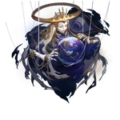

Ena
Aeon of OrderLore
Ena adalah Aeon kuno yang memimpin Path of Order, salah satu Aeon tertua di alam semesta. THEY digambarkan sebagai sosok adil, megah, dan suci seperti permata, dengan tujuan utama menjaga keteraturan mutlak di seluruh kosmos. Ena adalah "control freak" yang menekan kekacauan dan memastikan segala sesuatu berada dalam harmoni terstruktur.
Ena pernah menekan berbagai bencana besar (seperti Swarm Disaster) dengan kekuatan Order yang absolut. Namun, Path Order dan Harmony (Xipe) memiliki konsep yang sangat tumpang tindih, sehingga ketika Xipe naik menjadi Aeon penuh, Ena "diasimilasi" atau diserap oleh Xipe dalam proses "survival of the fittest" antar Path. Ini terjadi selama Swarm Disaster, membuat Path Order lenyap dan menyatu ke Harmony.
Meski sudah "mati" atau terasimilasi, pengaruh Ena masih terasa — terutama di Penacony, di mana Ena muncul kembali secara sementara melalui mimpi dan konsep Order yang tertanam dalam Harmony. Herta menyebut Ena sebagai salah satu Aeon tertua, lebih tua dari Qlipoth, dan radiasinya dulu suci seperti permata.
Nama "Ena" terkait konsep kepuasan absolut yang menciptakan order ketat. Pronoun: THEY/THEM. Quote ikonik: "It's Ena the Order, one of the most ancient Aeons. In the times before THEIR fall, THEIR radiance was as holy as gems!" — Herta.
Emanator & Pengaruh
Karena Ena sudah terasimilasi ke Xipe, tidak ada Emanator Order murni yang aktif saat ini. Namun, pengaruh Order masih ada dalam Path Harmony, terutama pada sosok yang menekankan kontrol ketat dan "order" di balik harmony (seperti aspek totalitarian dalam Harmony).
Di Penacony, Sunday (dan keluarga Oak) terhubung kuat dengan sisa-sisa Order melalui mimpi Ena. Sunday bahkan sempat "menjadi" manifestasi Ena sementara sebagai False God, menggunakan kekuatan Order untuk menciptakan mimpi teratur absolut. Ini menunjukkan bahwa Path Order masih bisa diakses meski Aeon-nya sudah lenyap.
Beyond the Sky Choir (organisasi kuno) adalah salah satu pengikut setia Ena sebelum asimilasi. Tidak ada Emanator Order baru confirmed setelah asimilasi, karena Path Order sudah menyatu dengan Harmony.
Penampilan
Ena muncul sebagai mata raksasa yang mengamati dan memanipulasi boneka tanpa badan (trunkless puppet) yang diselimuti kain compang-camping dan dimahkotai halo emas. Bentuk ini melambangkan pengawasan total dan kontrol seperti benang marionette.
Radiansinya digambarkan suci seperti permata, dengan aura megah dan adil. Di Simulated Universe dan cerita Penacony, Ena terlihat sebagai sosok kontrol freak dengan cahaya holy yang menekan kekacauan.
Setelah asimilasi, pengaruh Ena muncul sebagai elemen "order" dalam mimpi Harmony — seperti struktur kaku dan kontrol absolut di balik harmoni sempurna.